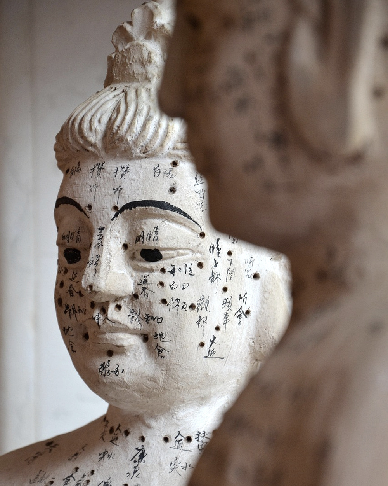
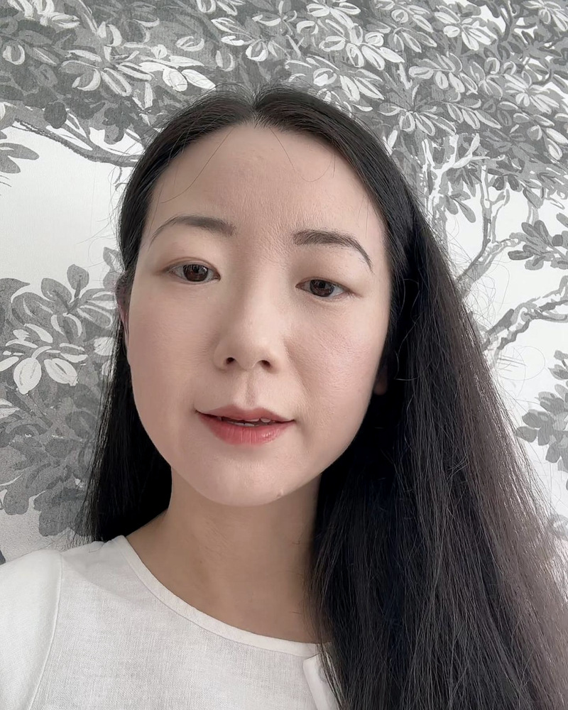

For people who have done the tests, seen the specialists, and still have no answer that fits. We arrange two readings, and either stands on its own. One is written for you by a senior physician at a licensed Traditional Chinese Medicine clinic in China. The other is read live by an independent practitioner: she looks, tells you what she is seeing, asks you about it, and follows your answers. She reads every case herself, start to finish. Everything begins with a reading, not a booking.

We do not sell a fixed programme, because we do not know what you need until you have been read. How long you would come for, and what that costs, is set out in your Observation Reading. Only then is there anything to book.
Sessions are given in person by the same practitioner who writes your reading, one session at a time rather than as a package. The number of sessions is decided from your reading. For some people that is a few days, for others two or three weeks.
The Observation Reading sets out how the practitioner reads the origin of what you are experiencing, and what to be careful of. It stands on its own, and most people stop here.
If treatment in person is appropriate, the report states how many sessions are indicated and what they would cost. No figure is quoted before that, because it would be a guess.
If you go ahead, the £850 reading fee is credited in full against treatment. If you do not, the reading is still yours to keep.
Interpreter throughout, transfers and accommodation arranged, and one point of contact in the UK for the whole trip. You are never navigating this alone.
A written summary in English, a plan you can follow at home, and scheduled follow-up in the months that follow.
Years of fatigue, digestion that never settles, sleep that doesn't restore, and a file full of results within normal range. Traditional Chinese Medicine reads the body differently, and often has something to say where Western investigation has run out of questions.
Fifteen minutes with a GP cannot hold a complicated history. Here you set it out in full in writing: everything you have tried, in the order you tried it, and what happened each time. It is read and thought about before anyone speaks to you, and what comes back is in writing, not a conversation you half remember.
The depth of training, the length of practice and the volume of cases sit in China. We take you to the people who hold it, rather than approximating it here.
Baoputang has nine senior physicians. These are the two who write the reports.
The TCM Wellness Report is written and signed off by a senior physician at Baoputang Clinic in Ningbo, China, a licensed Traditional Chinese Medicine clinic. This is the only service Baoputang provides. The Observation Reading, and any sessions in person, are arranged separately with an independent practitioner. She is not part of the Baoputang team.
Master's-trained and immersed in Huang Yuanyu's eleven classical texts. Known among patients for the detail of the after-care he writes for every case.
A master's in TCM internal medicine from Chengdu University of Chinese Medicine, grounded in Huang Yuanyu's Si Sheng Xin Yuan. She works across internal and women's health.
Neither is a diagnosis, and neither requires you to travel. One comes back to you written, by a physician at the clinic. The other is a live reading with the practitioner herself, in Chinese with an interpreter throughout. Which one you want depends on how much you have already been through.
A detailed intake with tongue and face photographs, read by a senior Traditional Chinese Medicine physician at our partner clinic in Ningbo, China. You receive a written account of what they see and what to change.
What it coversA reading by our most experienced practitioner, working from observation alone. It sets out how she reads the origin of what you are experiencing, what to be careful of, and, if you wish to be treated in person in China, how long that would take and what it would cost.
What it coversThe £850 fee is credited in full against treatment if you go on to be treated in China. If you take the reading on its own, it is not refundable.

I'm Sara. I'm not a doctor. I'm someone who fell down the rabbit hole of Traditional Chinese Medicine and never climbed back out. What began as decoding my own everyday habits took me to China to sit in on senior physicians' consultations and watch how they read a body.
What I found there was not a deeper version of what we have here. Part of it is not here at all: hands-on methods that pass from one teacher to one student rather than through a syllabus, and that have gone out of common practice even in China. YinYang Well exists to make that reachable: properly arranged, properly translated, and honest about what it is and isn't.
The meal-deal habit, and what cold food asks of your body.
Two kinds of tired that Western thinking lumps together.
The hour you wake is a clue, not a coincidence.
Tell us what has been going on and what you have already tried. We'll arrange a call, and be straight with you about whether this is the right thing — including when it isn't.
Request a consultation